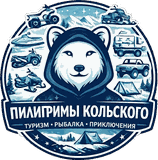

极光
不是每晚都有，天空也可能被云遮住。我们会开车躲开云层，但有时到处都是云。
没看到极光：任选一个有空位的晚上，第二次出行免费。

科拉朝圣者 Русский +7 (8152) 00-00-00自有小巴，每团最多 8 人。酒店接送，提供保暖连体服，并提前告诉您这个月能看到什么、看不到什么。
价格为拼团每人价格。所有线路都从您在摩尔曼斯克的酒店出发，结束后送回酒店。
傍晚查看云图，哪里天晴就去哪里，有时要开到离城一百公里以外。
穿过苔原约 120 公里，到达巴伦支海。圆石海滩、落入大海的瀑布、搁浅在浅滩上的旧船。
同样去捷里别尔卡，再乘快艇出海两小时。寻找鲸鱼，海豹和海鸟岩几乎每次都能看到。
洛沃泽罗区的萨米村。亲手喂驯鹿，坐狗拉雪橇，在帐篷里喝鱼汤。
基洛夫斯克距摩尔曼斯克 200 公里。冬天乘缆车登上艾库艾文乔尔山，夏天徒步去高山湖。
捷里别尔卡和基洛夫斯克咖啡馆的午餐、缆车票和博物馆门票需自付。本季价格可来电咨询。
极光、道路和大海，我们无法保证。每种情况都有明确规则，并写在预订确认函里。
不是每晚都有，天空也可能被云遮住。我们会开车躲开云层，但有时到处都是云。
没看到极光：任选一个有空位的晚上，第二次出行免费。
冬天遇暴风雪会封路，有时在出发前一小时才通知。无法绕行：去那里只有一条路。
封路：改到另一天，或全额退款。
有浪时捷里别尔卡的快艇不出海。即使风平浪静，也可能遇不到鲸鱼。
出海取消：退还快艇费用 5 000 ₽ ≈ ¥390。鲸鱼没出现，不退款。
我们请客人如实写，包括不满意的地方。
第一晚在云下等了三个小时，没有极光。向导主动提出第二天再去，没有再收钱。第二次开到图曼内以外，十一点左右天空变绿了大约四十分钟。发了连体服，但脚还是冻僵了，记得自带羊毛袜。
出发前一小时，去捷里别尔卡的路因暴风雪封闭。可以选择改期或退款，我们改到了后天。到了以后，圆石海滩上的风几乎把人吹倒。午餐在咖啡馆自费，这一点事先说过。
出海前船长就直说，不能保证看到鲸鱼。果然如此：在海上两小时，看到了海豹和满是海鸟的岩石，没有鲸鱼。有点遗憾，但没人骗我们。晚上十点回摩尔曼斯克时，太阳还挂在天上。
请留下联系方式。我们会联系您确认日期，并告诉您这几天团里是否有位置。